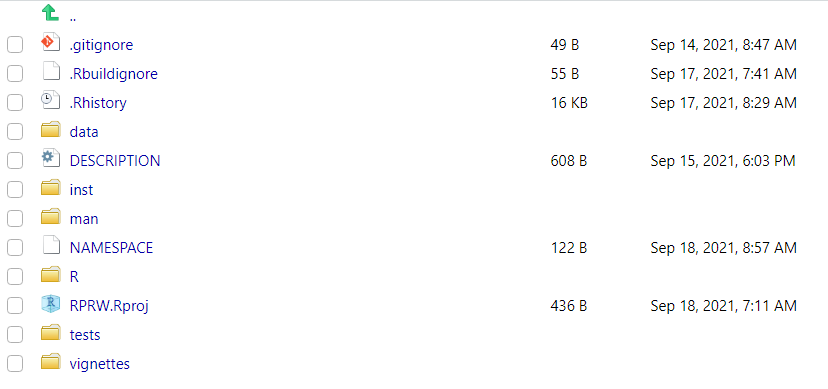

Chapter 1 Building an R Package
1.1 What is an R Package?
An R package is a collection of code, data, documentation, and tests with a particular structure that can be shared with others. R packages are commonly downloaded from the Comprehensive R Archive Network (CRAN) (external link). You can install them from CRAN by running
load them by running
and get help by running
One of the many reasons R packages are so useful is because they are the fundamental vessel by which to share R code. If your code is in a package, others can easily download and use it – this is the essence of open-source software! Most R users have some experience with at least one package, so they will likely be familiar with how to use yours after you share it. But sharing code is not the only benefit of creating packages – a major benefit of using packages is that they enforce your code is built using a certain structure. Adhering to this structure:
- saves you time – You don’t need to think about how to organize your files because packages tell you how these files must be organized!
- This rigid structure is especially helpful for me – before I started creating packages my R scripts would be saved in all sorts of locations with no particular organization structure. This made it very challenging to come back to my work later and find a particular script.
- gives you access to a set of standardized tools – people have created many useful tools that work with R packages, so take advantage of them!
- e.g. devtools and usethis
- forces you to frequently document your work
- Before I started using R packages, when I would come back my old code, I was convinced someone else wrote it – I basically had to rewrite it all to understand it. R packages help prevent this.
- guides your research compendium
- can make your research compendium completely reproducible and easy to share
- This is because packages are built upon R projects, which we discuss more later.
1.1.1 Exercises
What are some of your favorite R packages?
Of those we have talked about so far, what benefits of R packages are most appealing to you?
1.2 Creating an R Package
Next we will create the RPRW package together! If this is your first R package, then an extra special congratulations to you – this is a big milestone! For those interested in viewing the source code of the RPRW package, visit the GitHub repository here (external link).
1.2.1 The Motivating Dataset
Suppose we want RPRW to summarize the length (in kilometers) and discharge (meters per second cubed) of North American rivers. Suppose we also want RPRW to easily accommodate many subsets of rivers based on their name. Below are our data of interest:
river <- data.frame(
Missouri = c(3768, 1956),
Mississippi = c(3544, 18400),
Yukon = c(3190, 6340),
Colorado = c(2330, 40),
Arkansas = c(2322, 1004),
Columbia = c(2000, 7730),
Red = c(1811, 852),
Canadian = c(1458, 174)
)
rownames(river) <- c("length", "discharge")
print(river)#> Missouri Mississippi Yukon Colorado Arkansas Columbia Red Canadian
#> length 3768 3544 3190 2330 2322 2000 1811 1458
#> discharge 1956 18400 6340 40 1004 7730 852 174If the structure of river is atypical to you, see Exercise 3.7.1.1 (internal link).
1.2.2 The First Step
The first step is using devtools to create a package template for us. There are a two ways to easily create this template. First, in editor window (upper-left pane in RStudio), click “File -> New Project -> New Directory -> R Package -> Create Project”. An alternative approach is to run
√ Creating 'path_to_RPRW_package/RPRW/'
√ Setting active project to 'path_to_RPRW_package/RPRW'
√ Creating 'R/'
√ Writing 'DESCRIPTION'
Package: RPRW
Title: What the Package Does (One Line, Title Case)
Version: 0.0.0.9000
Authors@R (parsed):
* First Last <first.last@example.com> [aut, cre] (YOUR-ORCID-ID)
Description: What the package does (one paragraph).
License: `use_mit_license()`, `use_gpl3_license()` or friends to
pick a license
Encoding: UTF-8
LazyData: true
Roxygen: list(markdown = TRUE)
RoxygenNote: 7.1.1
√ Writing 'NAMESPACE'
√ Writing 'RPRW.Rproj'
√ Adding '^RPRW\\.Rproj$' to '.Rbuildignore'
√ Adding '.Rproj.user' to '.gitignore'
√ Adding '^\\.Rproj\\.user$' to '.Rbuildignore'
√ Opening 'path_to_RPRW_package/RPRW/' in new RStudio session
√ Setting active project to '<no active project>'
√ Setting active project to 'path_to_RPRW_package/RPRW'The package is placed inside a folder named “RPRW” created at the the path on your computer named “path_to_RPRW_package”. RStudio will automatically create a new window and you will see that in the “Files” tab of the bottom-right RStudio pane, there are several files (located in “path_to_RPRW_package/RPRW”)

Notice the .Rproj file, which indicates that your package is also an R project. Also notice that the top-right RStudio pane now has a “Build” tab, which contains some useful tools for your R package.
1.2.3 The First Function
R packages are composed of several functions that work together to accomplish a set of goals. The folder named “R” is where functions in your package live. Let’s create our first function, river_means(), which finds the mean river length and discharge of desired rivers. To create an R script in the R folder named river_means.R, run
You will see some output in the console
* Modify 'R/river_means.R'
* Call `use_test()` to create a matching test file and the appropriate file now in your R folder.

Generally, the name of your file should match the name of the function, and you should use separate files for separate functions. More experienced R users – it is okay to break this rule every once in a while depending on the context.
The body of river_means() looks like
river_means <- function(data, pattern) {
desired_rivers <- grep(pattern, names(data))
new_data <- data[, desired_rivers]
rowMeans(new_data)
}There are two arguments in river_means():
data: A data frame (whose rows represent length or discharge and whose columns represent rivers)- Making
datathe first argument toriver_means()makes it naturally pipeable (external link)
- Making
pattern: A character string indicating the pattern by which to subset the rivers indatabefore calculating means (all rivers whose names satisfy the pattern are kept)
There are three lines of code in river_means():
- Find the variables (rivers) in
datawhose names contain the pattern. - Subset
datato include only the rivers whose names contain the pattern - Find the mean length and discharge of the rivers whose names contain the pattern
By default, the function returns the object evaluated by its last line of code. So river_means() returns the output from rowMeans(). You can force the function to return a different object earlier using return(object).
You can leave comments in your function by prefixing a line with #. Comments are used to communicate in plain language the intent of your code. Leaving comments is usually good practice because it helps others (including future you) better understand the goals of your code.
1.2.4 devtools::load_all()
Now that we have written river_means(), it is natural to want to try it out. One approach is to run river_means() (either in the “R/river_means.R” script or by copying and pasting river_means() into the console). Another approach is to load river_means() by running
These approaches put river_means() in the global environment (look at the environment tab in the upper-right pane of RStudio). Unfortunately messing around too much in the global environment can easily introduce errors in your functions or have them behave in unexpected ways.
An alternative approach is to leverage devtools, since after all, you are bothering to create a package, so you may as well use the tools designed for them! The devtools function devtools::load_all() emulates the process of building, installing, and loading a package. This has a few benefits. First, the functions are “sourced” into a better spot (not the global environment). Second, it makes all of your functions available through a single line of code rather than running and/or sourcing several functions separately. I highly recommend you practice using devtools::load_all() instead of navigating the dangerous global environment.
Now we get to try out river_means()! Suppose we want to summarize the rivers whose names start with “Mi” (in river, this is only Missouri and Mississippi).
#> length discharge
#> 3656 10178Next suppose we want to summarize rivers whose names start with “Y” (Yukon) or “R” (Red)?
#> length discharge
#> 2500.5 3596.0Hooray – our function works! Give yourself a congratulations :)! And for more on patterns and strings in R, visit here (external link) and here (external link).
1.2.4.1 Exercises
How many functions does
river_means()call within the body of the function? What package are these functions in?Try using
river_means()with a few different patterns. Do you notice anything strange?
1.2.5 Creating Package Data
So far the river data has been stored in global environment. What if you want to save this data in an easily accessible location and/or share it with others? Another package development tool to the rescue – usethis::use_data() (are you starting to notice the benefits of the additional tools the package structure provides?).
√ Creating 'data/'
√ Saving 'river' to 'data/river.rda'You will see that at the root of your R package (inside “path_to_RPRW_package/RPRW”), there is now a folder called data. In data, there is a file called river.rda. river_rda contains the river data and can now be loaded by running utils::data("river"). For illustration, let’s remove river from our global environment and then load it using utils::data("river") (similar to how we load data from other packages):
rm(river) # remove the river data from our global environment
utils::data("river") # load the river data
print(river) # view the river data#> Missouri Mississippi Yukon Colorado Arkansas Columbia Red Canadian
#> length 3768 3544 3190 2330 2322 2000 1811 1458
#> discharge 1956 18400 6340 40 1004 7730 852 1741.2.6 roxygen Comments
After writing river_means(), you should document it while its structure is fresh in your mind. This makes it easier for others (including future you) to understand how to use river_means(). Documenting R functions is a bit more complicated than leaving standard comments (#). It requires using of a special type of comment, roxygen comments (view the roxygen2 (external link) package for more). roxygen comments are prefixed with #' (instead of #) and have special tags associated with them. roxygen comment templates can be automatically inserted into your R script by putting your cursor somewhere in the body of a function and either:
- In the upper-left toolbar, go to “Code -> Insert Roxygen Skeleton”
- Pressing
Ctrl/Cmd + Alt + Shift + R
Inserting this roxygen template into river_means() yields
#' Title
#'
#' @param data
#' @param pattern
#'
#' @return
#' @export
#'
#' @examples
river_means <- function(data, pattern) {
desired_rivers <- grep(pattern, names(data))
new_data <- data[, desired_rivers]
rowMeans(new_data)
}The @ indicates the tag. The template inserts four tags for us:
@param: to document function arguments@return: to document function output@export: to make the function available after installing the package- You may not want to export every function in your package (e.g. helpers)
@examples: to provide examples of using the function
Let’s document river_means():
#' Means of river lengths and discharges
#'
#' @param data A data frame with two rows. The first row indicates river length and
#' second row indicates river discharge. The columns of data indicate river names.
#' @param pattern A pattern by which to include only particular rivers
#'
#' @return The mean river length and mean river discharge for the desired rivers
#' @export
#'
#' @examples
#' data("river")
#' river_means(river, pattern = "Mi")
river_means <- function(data, pattern) {
desired_rivers <- grep(pattern, names(data))
new_data <- data[, desired_rivers]
rowMeans(new_data)
}Next we need to turn these roxygen comments into a new format that powers the actual documentation. The details of this new format are not critical – the important take-away is that the roxygen comments are automatically transformed to the new format by running
i Updating RPRW documentation
i Loading RPRW
Writing NAMESPACE
Writing river_means.RdFrom now on I’ll stop reminding you every time, but again, notice the benefits of leveraging tools that use the package structure. devtools::document() creates a new folder at the root of the package called man that now contains a file called river_means.Rd

The river_means.md file is the result of transforming the roxygen comments to documentation that packages use. As you can see, river_means.Rd is a bit more complicated than the roxygen comments in river_means(). Luckily, river_means.Rd is automatically generated. The broader, important point of all this is that after running devtools::document(), you can view the documentation of river_means()!

For more on documentation in R packages (including documenting data), visit here (external link) and the vignettes here (external link). Though we skip documenting the river data here, the RPRW package available from GitHub does document it (the documentation can be viewed by running ?river after library(RPRW)).
1.2.7 The Second Function
You may be wondering how to tell your package to use functions from other packages. river_means()uses a few other functions available in R (see Exercise 1.1.1.1 (internal link): <-, grep(), names(), [, and rowMeans(). How does R know how to use the right names() function when executing river_means()? These questions related to an package’s NAMESPACE, which we discuss a bit later.
The functions used in river_means() are all from the base package in R (external link). The base package is automatically installed alongside R. When using functions from the base package in your package, you don’t have to give R any special warning. This is the only package that operates this way, however. When using functions from other packages in your package, you need to let R know what package that function comes from (this is true even for other packages automatically installed alongside R - datasets, graphics, grDevices, methods, stats, and utils). To illustrate this process, suppose we want to create a new function in our package called river_medians() that operates like river_means() but computes medians instead of means. First we create the script in our R folder by running
Then we can write river_medians() (there is no rowMedians() function so we need to use apply() to summarize across rows – see ?apply for more detail):
river_medians <- function(data, pattern) {
desired_rivers <- grep(pattern, names(data))
new_data <- data[, desired_rivers]
apply(new_data, 1, median)
}But wait! Run
See anything different? You’ll notice that median() is in the stats package (external link), not the base package. We need to let R know that when river_medians() uses median(), median() is from the stats package. To accomplish this, there are two steps to take.
The first step is to tell your package that at least one function from the stats package is required by running
√ Adding 'stats' to Imports field in DESCRIPTION
* Refer to functions with `stats::fun()`The package stats was added to the Imports field in the DESCRIPTION file at the root of your package. We will talk more about DESCRIPTION in a bit, but for now just remember that it contains metadata (high-level data) about your package. No matter how many times your package uses any function from stats, you only need to run usethis::use_package("stats") once.
The second step is to tell the river_medians() function to use the median() function from stats. There are a few ways to do this. The way that is considered “best practice” is to preface any outside functions (aside from those in base) with package::. Incorporating this into river_medians() and inserting roxygen documentation yields
#' Medians of river lengths and discharges
#'
#' @param data A data frame with two rows. The first row indicates river length and
#' second row indicates river discharge. The columns of data indicate river names.
#' @param pattern A pattern by which to include only particular rivers
#'
#' @return The median river length and mean river discharge for the desired rivers
#' @export
#'
#' @examples
#' data("river")
#' river_medians(river, pattern = "Mi")
river_medians <- function(data, pattern) {
desired_rivers <- grep(pattern, names(data))
new_data <- data[, desired_rivers]
apply(new_data, 1, stats::median)
}Though package::function is considered best practice, it does add some extra typing and can be cumbersome if you are using many outside functions. The package:: prefix can be avoided by importing median() from stats to river_median() using the roxygen tag @importFrom:
#' Medians of river lengths and discharges
#'
#' @param data A data frame with two rows. The first row indicates river length and
#' second row indicates river discharge. The columns of data indicate river names.
#' @param pattern A pattern by which to include only particular rivers
#'
#' @return The median river length and mean river discharge for the desired rivers
#' @importFrom stats median
#' @export
#'
#' @examples
#' data("river")
#' river_medians(river, pattern = "Mi")
river_medians <- function(data, pattern) {
desired_rivers <- grep(pattern, names(data))
new_data <- data[, desired_rivers]
apply(new_data, 1, median)
}A third option is relevant if you are using several functions from stats. In this case, it may be easier to use the @import tag, which imports all functions from stats to river_median().
#' Medians of river lengths and discharges
#'
#' @param data A data frame with two rows. The first row indicates river length and
#' second row indicates river discharge. The columns of data indicate river names.
#' @param pattern A pattern by which to include only particular rivers
#'
#' @return The median river length and mean river discharge for the desired rivers
#' @import stats
#' @export
#'
#' @examples
#' data("rivers")
#' river_medians(rivers, pattern = "Mi")
river_medians <- function(data, pattern) {
desired_rivers <- grep(pattern, names(data))
new_data <- data[, desired_rivers]
apply(new_data, 1, median)
}Be careful when using @importFrom or @import (especially @import). If two functions from different packages have the same name and you try to use one it in your function, R may use the wrong one. In these contexts, using the package:: prefix is crucial.
To finish creating the river_medians() documentation, run
1.2.7.1 Exercises
These exercises are challenging, so if they don’t make sense now, that is okay! Make sure to re-review the solutions after the workshop.
Write a new function,
river_stats(), that takes a data frame, pattern, and a general function by which to summarize river length and discharge. This general function should not be an actual function but rather a placeholder for a function a user inserts themselves.Rewrite
river_stats()from the previous exercise so thatriver_stats()also takes additional arguments to the summarizing function (hint: use...as an argument)
1.2.8 DESCRIPTION
The DESCRIPTION file contains the R package’s metadata (and was automatically installed when we created the R package). The DESCRIPTION file lets you easily track version numbers, authorship, and additional R packages that your R package uses. There are two fields in DESCRIPTION that do most of the communication regarding how your R package uses additional R packages:
Imports: Packages here must be installed in order for your package to work. As a result, any package listed inImportswill be installed alongside your package. Packages inImportshelp build the foundation of your package.Suggests: Packages here enhance your package but are not required for your package to work. You might use suggested packages for enhanced plotting, additional data sets, or more. Packages inSuggestscan add finishing touches to your package, but they are not part of your package’s foundation – they are like a home’s paint color, not its framing.
Other fields used to communicate how your R package uses additional R packages are Depends, LinkingTo, and Enhances. The difference between Depends and Imports is subtle – the general advice is to use Imports instead of Depends.
Editing the package, title, author, and description fields of this package yield a DESCRIPTION file that looks like
Package: RPRW
Title: R Packages for Reproducible Workflows
Version: 0.0.0.9000
Authors@R:
person(given = "Michael",
family = "Dumelle",
role = c("aut", "cre"),
email = "Dumelle.Michael@epa.gov")
Description: A companion R package for "Using R Packages for Reproducible Workflows"
at the 2021 EPA R Workshop.
License: `use_mit_license()`, `use_gpl3_license()` or friends to pick a
license
Encoding: UTF-8
LazyData: true
Roxygen: list(markdown = TRUE)
RoxygenNote: 7.1.1
Depends:
R (>= 2.10)
Imports:
statsWe will talk about some of the remaining parts of DESCRIPTION later.
1.2.9 NAMESPACE
While the DESCRIPTION file communicates what packages your package uses, the NAMESPACE file communicates how your package uses these packages. More specifically, the NAMESPACE file controls which functions your package exports (making them available to others when your package is installed) and what functions from what packages must be available for your exported functions to work. The NAMESPACE file is automatically updated while running devtools::document() and should not be edited by hand (in fact, there is a warning in the NAMESPACE file to warn against editing the file by hand).
In river_median(), if you called median using stats::median, your NAMESPACE file will look like
If you used the @importFrom stats median approach, your NAMESPACE will look like
# Generated by roxygen2: do not edit by hand
export(river_means)
export(river_medians)
importFrom(stats,median)If you used the @import stats approach, your NAMESPACE will look like
1.2.10 testthat
Testing your code to make sure that it performs as intended is an important step in the package building process. Though this may seem like extra work upfront, implementing a rigorous testing procedure for your package is essential for its continued success. In R, testing is incorporated into your package through the testthat (external link) package. To begin using testthat, run
√ Adding 'testthat' to Suggests field in DESCRIPTION
√ Setting Config/testthat/edition field in DESCRIPTION to '3'
√ Creating 'tests/testthat/'
√ Writing 'tests/testthat.R'The root of your package directory should look like 
The tests folder should look like

Tests are generally written on a function-by-function basis. Tests for a function should be contained in an R script titled test-function_name. Luckily, usethis::use_test() creates an R script for you with the proper name! To start testing river_means(), run
√ Writing 'tests/testthat/test-river_means.R'
* Modify 'tests/testthat/test-river_means.R'Your testthat folder should look like
Tests can be fairly detailed and cover many components of a function (such as input types, output types, function output, etc.). The tests in testthat are prefixed with expect_. Here we write a simple test that calculates whether our function, river_means(), yields output that we would expect if we calculated the means “by hand”:
library(testthat) # testthat is installed with devtools but we must load it
testthat::test_that("the mean length is calculated correctly in a test case", {
# calculate values required for the test for length
## calculate the means from the function
river_means_val <- river_means(river, "Missouri|Mississippi")
river_means_length <- river_means_val[[1]]
## calculate the means "by hand"
raw_vec_length <- unlist(river["length", c("Missouri", "Mississippi")])
raw_means_length <- mean(raw_vec_length)
# perform the actual test for length
## check that the function and "by hand" output matches
expect_equal(river_means_length, raw_means_length)
})#> Test passedIf you have many tests, the devtools::test() function runs all of the tests in the testthat folder:
i Loading RPRW
i Testing RPRW
√ | OK F W S | Context
√ | 1 | river_means
== Results =========================================================================
[ FAIL 0 | WARN 0 | SKIP 0 | PASS 1 ]We can write a similar test for discharge and then repeat the process for river_meadians(). Then devtools::test() returns
i Loading RPRW
i Testing RPRW
√ | OK F W S | Context
√ | 2 | river_means
√ | 2 | river_medians
== Results =========================================================================
[ FAIL 0 | WARN 0 | SKIP 0 | PASS 4 ]All tests pass – hooray! I want to again emphasize how important testing is. I know that it seems like an extra chore, but in my experience, writing careful tests has always paid off…with interest.
1.2.10.1 Exercises
Write similar tests for
river_means()(discharge),river_medians()(length), andriver_medians()(discharge).Check out the covr (external link) package, which quantifies how much of your package’s code is used by your tests.
1.2.11 License
At some point, your package needs a license. The license places restrictions on how your package can be shared with others. Licensing can be rather technical and complicated, so I refer you here (external link) for more information. For illustration purposes, we will use a GPL-3 license for this package:
√ Setting License field in DESCRIPTION to 'GPL (>= 3)'
√ Writing 'LICENSE.md'
√ Adding '^LICENSE\\.md$' to '.Rbuildignore'usethis::use_gpl_license() adds the license to DESCRIPTION and creates a LICENSE.md file at the root of your package that contains information about the license. Approved licenses for EPA repositories include CC0, MIT, GPL-3, and Apache 2.
1.2.12 Vignettes
Vignettes act as high-level user guides for your package. They are the glue that binds together several components of your package to illustrate how the package can be used to solve a particular problem. Vignettes tend to be R Markdown documents. Though we cover R Markdown documents in more detail later, for now we note that they that interweave text and R code to create reproducible documents. You can recognize whether a document is an R markdown documents by the .Rmd extension that R documents have.
The ggplot2 (external link) package is a popular package for visualizing data. After installing ggplot2
you can view its available vignettes by running
after which a file will pop up alongside your R scripts with the contents

To then view a specific vignette, run vignette("topic", "package"). For example, to view the vignette regarding aesthetic specifications, run
The vignette can then be viewed in the “Help” tab of the bottom-right pane of RStudio. Vignettes are also available on a package’s CRAN page – for the ggplot2 aesthetic specifications vignette viewable on its CRAN page, see here (external link).
Suppose we want to include a vignette in RPRW that shows how to it to compute river statistics. Running
√ Adding 'knitr' to Suggests field in DESCRIPTION
√ Setting VignetteBuilder field in DESCRIPTION to 'knitr'
√ Adding 'inst/doc' to '.gitignore'
√ Creating 'vignettes/'
√ Adding '*.html', '*.R' to 'vignettes/.gitignore'
√ Adding 'rmarkdown' to Suggests field in DESCRIPTION
√ Writing 'vignettes/river-statistics.Rmd'
* Modify 'vignettes/river-statistics.Rmd'does a few things. It alters your DESCRIPTION file, most notably adding the knitr (external link) and rmarkdown packages to the Suggests field. It also creates a vignette folder at the root of your package and adds to that folder an rmarkdown vignette named river-statistics.Rmd (notice the .Rmd extension) whose title is “River Statistics”.
While we won’t create a vignette for our package during the workshop, I have added a vignette to the RPRW package. To view it (after installation), run
1.2.13 devtools::check()
At this point we have built R package and are ready to share it with the world! But we should probably check to make sure we did not make any small mistakes. Does devtools have a way to do this? Of course – introducing devtools::check()! devtools::check() evaluates several automated tests on your package to make sure it can be properly installed and shared – this can take a few minutes. The devtools::check() output lists errors, warnings, and notes associated with your package. Though the warnings and notes are important, it is most crucial to address the errors immediately.
Hopefully after running devtools::check(), your output looks like
-- R CMD check results ---------- RPRW 0.0.0.9000 ----
Duration: 34.4s
0 errors √ | 0 warnings √ | 0 notes √If not, do your best to fix the errors and address the warnings and notes!
1.2.14 devtools::install()
After devtools::check() identifies zero errors (and hopefully zero warnings and zero notes), you can install your package by running
After installing RPRW, you can use library(RPRW) to load it like you do for any other R package.
1.2.14.1 Exercises
- Find the argument to
devtools::install()that identifies whether vignettes are built alongside installation. What is the default value of this argument?
1.2.15 Congratulations
Congratulations on building an R package! If this was your first one, then an extra special congratulations to you! Hopefully stepping through the process together made it all less intimidating.
1.3 Debugging
Even the best of programmers write code that may fail in unintended ways. This unintended failing of code is referred to as a “bug,” and the process of fixing the “bug” is known as “debugging”. Don’t expect to always write perfect code – do expect to have the tools necessary to track down bugs and remedy them. Though we went through a rigorous documentation and testing procedure when creating river_means() and river_medians(), there are still bugs present in these functions.
1.3.1 A Mysterious Error Message
We have already used river_means() and river_medians() to successfully find means and medians for several patterns. But running river_means(river, "R") yields a mystifying error:
#> Error in rowMeans(new_data): 'x' must be an array of at least two dimensionsSomething is wrong – and we need to figure out what. A good first step is to copy and paste the error into a Google search engine and see if anyone has solved the problem yet. If you are lucky, this approach will identify the bug for you. If you are not so lucky, you need to try a different approach. Fortunately, R has built-in tools that can help you track down bugs – we will explore a few of these tools next.
1.3.2 traceback()
The traceback() function is generally run in the console after receiving an error. traceback() identifies where the error occurred in the previous function call. Here we run traceback() after river_means(river, "R"):
3: stop("'x' must be an array of at least two dimensions")
2: rowMeans(new_data) at #4
1: river_means(river, "R")We now know that the error occurs in Line 4 of river_means() (the rowMeans(new_data) step). While this is very useful information, we still don’t know exactly why the error occurs.
1.3.3 browser()
In my early stages of debugging, I would save my arguments to a function in the global environment and then run through each line of the function returning the error, effectively “recreating” the environment in which the error occurred. Perhaps some of you have done this too. The bad news is that this approach is often error-prone and inefficient. The good news is that there is a better way – browser(). Inserting browser() into your code and then running it lets you interactively step into the function, starting at wherever browser() is located. No more saving arguments to the global environment and running code line-by-line! Let’s try this out with river_means():
river_means <- function(data, pattern) {
browser()
desired_rivers <- grep(pattern, names(data))
new_data <- data[, desired_rivers]
rowMeans(new_data)
}After using devtools::load_all() and running river_means(), you will step into the function before the first line of code. For example,
opens a new file in the editor (upper left-hand) window that looks like

You will also see a few buttons in the R console (lower left-hand) window:

These five buttons help you interactively navigate through river_means(). From left to right, they are
- Next (
n), which executes the next line of the code - Step (
s), which steps into the function called by the current line of code - Finish (
f), which finishes execution of the current function - Continue (
c), which leaves the interactive context and continues execution of the function - Stop (
Q), which leaves the interactive context and terminates execution of the function
Before navigating through any lines of river_means(), we see data and pattern are defined:
#> Missouri Mississippi Yukon Colorado Arkansas Columbia Red Canadian
#> length 3768 3544 3190 2330 2322 2000 1811 1458
#> discharge 1956 18400 6340 40 1004 7730 852 174#> [1] "R"Pressing n (Next) executes browser(). Pressing n (Next) again executes
Inspecting desired_rivers, we see
#> [1] 7This seems correct, as the seventh river, “Red”, does match the pattern “R”. So the error isn’t here. Let’s press n (Next) to evaluate the next line
Inspecting new_data, we see
#> [1] 1811 852Well this seems weird – new_data does not look like a data frame. Let’s inspect the structure
#> num [1:2] 1811 852new_data is in fact not a data frame, but rather it is a numeric vector. Because rowMeans() requires an array of two or more dimensions (e.g. a matrix or data frame), the next line of code, rowMeans(), fails. Pressing n again returns the error and removes you from the interactive mode:
#> Error in rowMeans(new_data): 'x' must be an array of at least two dimensionsThis is a good example of one of the reasons debugging can be so challenging: often, an error occurs because code from a few lines back runs in an unintended way (even though it runs successfully). Note that a similar error occurs when running river_medians(river, "R") because apply() requires an array of two or more dimensions.
So what is happening here? We know the code works when the pattern yields at least two matches in river. But now, with one match, the code is failing. Let’s start with the [ function called by data[, desired_rivers], where we receive unintended output. Let’s look at the documentation of [ by running
A close look at the documentation reveals further documentation for the behavior of [ when applied to a data frame
Notice the drop argument in this documentation. The drop argument, when TRUE, coerces the object to the lowest possible dimension. When subsetting a data frame by one column, drop is TRUE by default and data frame structure is turned into a vector structure, which only has one dimension – this is why the error is occurring. So we need to force our subsetting to always keep the data frame structure by setting drop = FALSE. Accommodating this change in river_means() and river_medians() yields functions that look like
river_means <- function(data, pattern) {
desired_rivers <- grep(pattern, names(data))
new_data <- data[, desired_rivers, drop = FALSE]
rowMeans(new_data)
}
river_medians <- function(data, pattern) {
desired_rivers <- grep(pattern, names(data))
new_data <- data[, desired_rivers, drop = FALSE]
apply(new_data, 1, median)
}Now running river_means() and river_medians() with patterns only having one match behaves as intended
#> length discharge
#> 1811 852#> length discharge
#> 1811 852For more information about debugging in R, watch this (external link) and/or read this (external link).
1.3.4 Another Error – No Mysterious Message
We previously received and fixed an error message that occurred when the pattern only matched one river. So we know our code works when the pattern matches at least one river. But what happens when the pattern matches zero rivers?
#> length discharge
#> NaN NaNThe length and discharge means are NaN, which stands for “Not a Number” – this is certainly unintended (note that river_medians(river, "ZZZ") returns similar output.). These types of bugs are especially pernicious because there is no error message associated with them – we can’t use traceback(). Say river_means() was a small part of a much larger function, – this bug could be the root of a confusing error several lines later. Whenever function output is unexpected and you can’t immediately figure out why, use browser() to diagnose the bug. In this context, desired_rivers is a length-zero vector, which causes problems in the remaining parts of the function. To guard against these types of bugs, identify potentially problematic scenarios for your function and program defensively, forcing the function to return an informative error message when a problematic scenario is identified. Here we force river_means() to return an error message when the pattern matches zero rivers:
river_means <- function(data, pattern) {
desired_rivers <- grep(pattern, names(data))
if (length(desired_rivers) == 0) {
stop("This is an error message that stops the function.")
}
new_data <- data[, desired_rivers, drop = FALSE]
rowMeans(new_data)
}#> Error in river_means(rivers, "ZZZ"): This is an error message that stops the function.1.3.4.1 Exercises
- Rewrite
river_medians()so that it stops and returns an informative error message when the pattern matches zero rivers.
1.4 Additional Resources
- R Packages (external link) by Hadley Wickham (external link) and Jenny Bryan (external link) (Wickham 2015)
- Writing an R package from scratch (external link) by Hilary Parker (external link)
- Writing R Extensions (external link) by CRAN (this resource is very technical)
References
Wickham, Hadley. 2015. R Packages: Organize, Test, Document, and Share Your Code. " O’Reilly Media, Inc.".